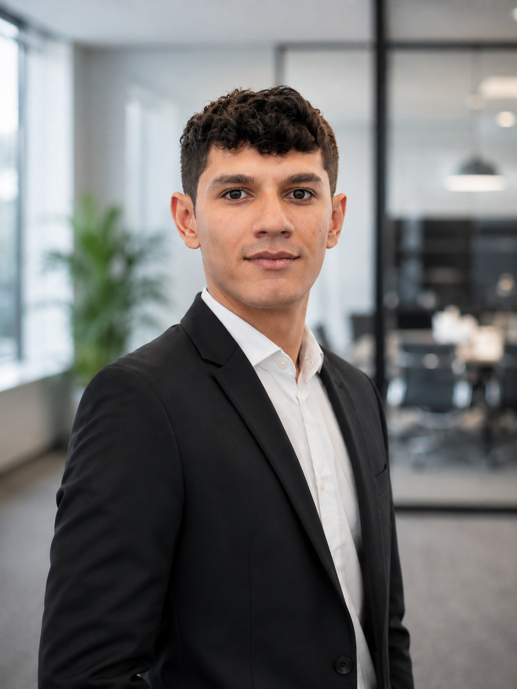

Portafolio profesional
Luis Alejandro Silva Díaz
Ingeniería Mecatrónica · Próximo a graduarse
Diseño e implemento soluciones que integran hardware, software, control, electrónica, datos e inteligencia artificial. Busco iniciar mi carrera como practicante en ingeniería, automatización, ciencia de datos, IA, desarrollo de software o procesos industriales.
- Universidad
- Universidad Militar Nueva Granada
- Estado
- Décimo semestre · Pendiente de práctica profesional
- Ciudad
- Bogotá D.C., Colombia
- Inglés
- C1 (Oxford Placement Test, British Council)
est.luis.silva@unimilitar.edu.co
Áreas técnicas principales
Perfil Profesional
Estudiante de Ingeniería Mecatrónica en proceso de graduación, con experiencia en proyectos de automatización, inteligencia artificial, electrónica, análisis de datos y desarrollo de software.
Orientado al diseño e implementación de soluciones tecnológicas que integran hardware, software, control, electrónica, análisis de datos e inteligencia artificial para optimizar procesos y resolver desafíos industriales y empresariales. He desarrollado proyectos utilizando Python, TensorFlow, PyTorch, MATLAB, PLC Siemens, Ansys, bases de datos SQL/NoSQL, visión por computadora y desarrollo Full Stack, aplicando estas tecnologías en sistemas de control, soluciones de inteligencia artificial y plataformas embebidas.
Me destaco por transformar requerimientos técnicos en soluciones funcionales, integrando diferentes disciplinas de ingeniería y adaptándome rápidamente a nuevas tecnologías. Además, cuento con experiencia trabajando en proyectos que requieren la combinación de conocimientos de software, hardware, automatización, datos e inteligencia artificial.
Busco iniciar mi carrera profesional y aportar como practicante en ingeniería, automatización, inteligencia artificial, ciencia de datos, desarrollo de software, transformación digital o procesos industriales.
Competencias principales
- Inteligencia artificial y Machine Learning: redes neuronales (MLP, CNN, RCNN, LSTM), visión por computadora y despliegue en NVIDIA Jetson y Edge Impulse.
- Automatización e industria: PLC en TIA Portal, control PID y por retroalimentación de estados con observador, supervisión HMI/SCADA con WinCC.
- Programación, datos y desarrollo web: Python, C, C++, Java y JavaScript; bases de datos; Three.js/WebGL.
- Diseño y robótica: SolidWorks y ANSYS, cinemática y planeación de trayectorias, simulación en CoppeliaSim y ROS.
- Electrónica y energía: electrónica de potencia, instrumentación y sensórica, microcontroladores y plataformas embebidas.
Habilidades y herramientas
Organizadas por área. Son las herramientas que he usado en proyectos universitarios.
Inteligencia artificial y Machine Learning
Datos y bases de datos
Control y simulación
Automatización industrial
Electrónica y hardware
Diseño y análisis de ingeniería
Idiomas
Proyectos
Proyectos universitarios: qué construí, cómo lo construí y con qué tecnologías.
Formación
Universidad Militar Nueva Granada
Ingeniería Mecatrónica · Bogotá D.C.
Próximo a graduarseColegio Miguel Antonio Caro
Bachiller Académico · Bogotá D.C.
Certificaciones
Deep Learning with PyTorch: Generative Adversarial Network
Coursera · Virtual
Descargar certificado (PDF)Oxford Placement Test — Inglés C1
British Council · Presencial
Descargar certificado (PDF)Experiencia
Experiencia laboral
No cuento con experiencia laboral.
MILIMARS — Plataforma Web Integral para University Rover Challenge 2027
Universidad Militar Nueva Granada | Grupo de Trabajo TI — Proyecto internacional
- Desarrollador web frontend del equipo de robótica espacial MILIMARS, participante del University Rover Challenge 2027 (Utah, EE. UU.).
- Sitio institucional con visualización 3D interactiva del rover.
- Gemelo digital con telemetría en tiempo real conectado al rover físico.
- Módulo de detección de vida para la Science Mission.
- Integración de visión por computadora y migración de la infraestructura a NVIDIA Jetson.
Contacto
¿Tienes una oportunidad de práctica o un proyecto en mente? Escríbeme.
- Correo est.luis.silva@unimilitar.edu.co
- Teléfono +57 301 658 6464